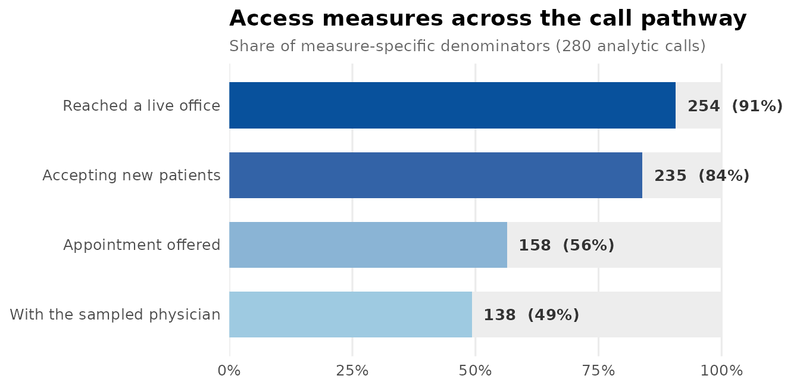
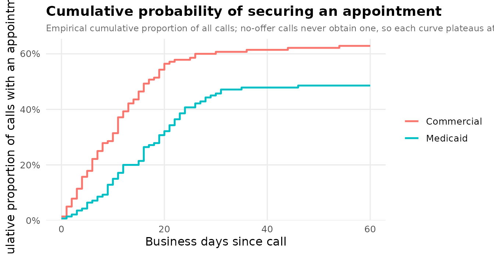

A matched-pair mystery-caller analysis
Source:vignettes/matched-pair-analysis.Rmd
matched-pair-analysis.RmdThis vignette walks a complete matched-pair mystery-caller analysis end to end, using the tools added for auditing healthcare access. The matched-pair design — the same practice called under two insurance scenarios — is the paradigm the package is built around: pairing removes each practice’s baseline generosity, so a difference between scenarios is not confounded by which practices happened to be called.
1. A simulated study
We simulate 140 practices, each called twice (Commercial and Medicaid), with a per-practice random effect so the two calls to one practice are correlated. The data are in long form: one row per practice × scenario.
set.seed(2026)
np <- 140L
subspecialty <- sample(c("General", "Pediatric", "Rhinology", "Laryngology"),
np, TRUE, prob = c(.45, .25, .18, .12))
region <- sample(c("Northeast", "South", "Midwest", "West"), np, TRUE)
caller <- sample(paste0("RA", 1:5), np, TRUE)
u <- rnorm(np, 0, 0.7) # practice generosity
cbsa <- ifelse(runif(np) < 0.72,
sprintf("C%05d", sample(10000:40000, np, TRUE)), NA_character_)
cfips <- sprintf("%05d", sample(1001:56045, np, TRUE))
d <- data.frame(
practice = rep(seq_len(np), times = 2L),
scenario = rep(c("Commercial", "Medicaid"), each = np),
stringsAsFactors = FALSE
)
d$subspecialty <- subspecialty[d$practice]
d$region <- region[d$practice]
d$caller <- caller[d$practice]
d$cbsa_code <- cbsa[d$practice]
d$county_fips <- cfips[d$practice]
medicaid <- d$scenario == "Medicaid"
sub_off <- c(General = 0, Pediatric = -0.3, Rhinology = 0.2, Laryngology = 0.1)
eta <- 1.1 - 1.0 * medicaid + u[d$practice] + sub_off[d$subspecialty]
d$office_answered <- runif(nrow(d)) < 0.94
d$appointment_offered <- d$office_answered & (runif(nrow(d)) < plogis(eta))
d$taking_new_patients <- ifelse(d$appointment_offered | runif(nrow(d)) < 0.6,
"Yes", "No")
sub_wait <- c(General = 0, Pediatric = 0.15, Rhinology = 0.1, Laryngology = 0.2)
mu_wait <- exp(2.4 + 0.45 * medicaid + sub_wait[d$subspecialty])
d$wait_days_business <- ifelse(
d$appointment_offered, rnbinom(nrow(d), mu = mu_wait, size = 2), NA_real_)
d$appointment_outcome <- ifelse(
d$appointment_offered,
sample(c("With sampled physician", "With different physician"),
nrow(d), TRUE, c(.8, .2)),
"No appointment offered")
# a `complete` flag: a handful of calls never reached a determination
d$complete <- d$office_answered | runif(nrow(d)) < 0.5
head(d)
#> practice scenario subspecialty region caller cbsa_code county_fips
#> 1 1 Commercial Pediatric West RA1 C18767 50173
#> 2 2 Commercial Pediatric Northeast RA4 C14100 30599
#> 3 3 Commercial General Midwest RA5 C30688 34473
#> 4 4 Commercial General Midwest RA2 C18966 46502
#> 5 5 Commercial Pediatric Northeast RA3 C31877 25887
#> 6 6 Commercial General Northeast RA5 <NA> 53447
#> office_answered appointment_offered taking_new_patients wait_days_business
#> 1 FALSE FALSE Yes NA
#> 2 FALSE FALSE Yes NA
#> 3 TRUE TRUE Yes 4
#> 4 FALSE FALSE No NA
#> 5 TRUE FALSE Yes NA
#> 6 TRUE TRUE Yes 5
#> appointment_outcome complete
#> 1 No appointment offered TRUE
#> 2 No appointment offered FALSE
#> 3 With sampled physician TRUE
#> 4 No appointment offered FALSE
#> 5 No appointment offered TRUE
#> 6 With sampled physician TRUETo make the data-integrity tools earn their keep, we deliberately introduce two kinds of contradiction that creep into real call logs:
# (a) a wait time recorded even though no appointment was offered
d$appointment_offered[5] <- FALSE
d$appointment_outcome[5] <- "No appointment offered"
d$wait_days_business[5] <- 14
# (b) the offered flag disagrees with the authoritative outcome
d$appointment_offered[8] <- FALSE # says "not offered" ...
d$appointment_outcome[8] <- "With sampled physician" # ... but an appt was made2. A clustering key for mixed models
The mixed-model fitters need a random_intercept column,
but our geography is split across a metro code that only some practices
have and a county code for the rest.
mysterycall_cluster_id() coalesces them, giving any
still-missing row its own singleton so it never silently collapses into
one giant cluster.
d$cluster <- mysterycall_cluster_id(d, c("cbsa_code", "county_fips"))
head(d$cluster)
#> [1] "C18767" "C14100" "C30688" "C18966" "C31877" "53447"3. Data integrity
mysterycall_check_consistency() runs a battery of
cross-field rules and returns a single priority-sorted worklist. The
defaults include WAIT_NO_OFFER, which catches contradiction
(a) above.
issues <- mysterycall_check_consistency(d, id_col = "practice")
issues
#> <mysterycall consistency report: 1 rows flagged by 1 of 5 rules>
#>
#> By priority / flag:
#> # A tibble: 1 × 3
#> priority flag n
#> <chr> <chr> <int>
#> 1 HIGH WAIT_NO_OFFER 1
#>
#> # A tibble: 1 × 6
#> row practice flag priority description action
#> <int> <int> <chr> <fct> <chr> <chr>
#> 1 5 5 WAIT_NO_OFFER HIGH A wait time is recorded but no a… Clear…mysterycall_reconcile_offer_outcome() finds — and here
fixes — rows where the binary offer flag contradicts the granular
outcome (contradiction (b)), treating the detailed outcome as
authoritative and clearing any stray wait/date when a row flips to “not
offered”.
rec <- mysterycall_reconcile_offer_outcome(
d,
flag_col = "appointment_offered",
outcome_col = "appointment_outcome",
offered_values = c("With sampled physician", "With different physician"),
not_offered_values = "No appointment offered",
dependent_cols = "wait_days_business",
action = "fix",
id_col = "practice"
)
rec
#> <mysterycall offer/outcome reconciliation [fix]>
#> flag understates outcome (-> offered): 1
#> flag overstates outcome (-> not offered): 0
#>
#> Discordant rows:
#> # A tibble: 1 × 6
#> row practice flag outcome direction suggested
#> <int> <int> <lgl> <chr> <chr> <chr>
#> 1 8 8 FALSE With sampled physician flag_understates offered
d <- rec$data # continue with the reconciled data4. The access cascade
Simulated-patient studies report a cascade of intermediate
access measures. mysterycall_access_cascade() turns an
ordered set of stage definitions into a count / denominator / percent
table with Wilson intervals, and an optional funnel figure.
cascade <- mysterycall_access_cascade(d, list(
mysterycall_cascade_stage("Reached a live office", "office_answered", TRUE),
mysterycall_cascade_stage("Accepting new patients", "taking_new_patients", "Yes"),
mysterycall_cascade_stage("Appointment offered", "appointment_offered", TRUE),
mysterycall_cascade_stage("With the sampled physician", "appointment_outcome",
"With sampled physician")
), plot = TRUE)
cascade
#> <mysterycall access cascade: 4 stages, 280 analytic calls>
#> # A tibble: 4 × 6
#> group measure n denominator pct ci
#> <chr> <chr> <int> <int> <chr> <chr>
#> 1 Access cascade Reached a live office 254 280 90.7% [86.7, 93.6]
#> 2 Access cascade Accepting new patients 235 280 83.9% [79.2, 87.8]
#> 3 Access cascade Appointment offered 158 280 56.4% [50.6, 62.1]
#> 4 Access cascade With the sampled physician 138 280 49.3% [43.5, 55.1]
#>
#> $plot: a ggplot funnel figure is attached.
cascade$plot
5. Bounds under non-response
Not every call completes. Rather than quietly condition the offer
rate on the completed calls, mysterycall_outcome_bounds()
reports the assumption-free Manski interval: assign every incomplete
call first to failure, then to success.
mysterycall_outcome_bounds(d, "appointment_offered", observed = "complete")
#> <mysterycall outcome bounds under non-response>
#> universe 280 = observed 266 + missing 14; positives 158
#> complete-case rate: 59.4% (95% CI 53.4%-65.1%)
#> bounds over universe: [56.4% (all missing fail), 61.4% (all succeed)] width 5.0%6. Time to an appointment
For a single-contact design the correct time-to-event primitive is the empirical cumulative proportion offered by business-day t — not a Kaplan–Meier curve, which would censor the never-offered calls and imply follow-up the design does not have. Each curve plateaus at that scenario’s offer rate.
curve <- mysterycall_cumulative_access_curve(
d, time_col = "wait_days_business", offered_col = "appointment_offered",
group_col = "scenario", horizon = 60, plot = TRUE)
curve$plateau
#> # A tibble: 2 × 3
#> group offer_rate n
#> <chr> <dbl> <int>
#> 1 Commercial 0.636 140
#> 2 Medicaid 0.493 140
curve$plot
7. The matched comparison
Now the heart of the design. Only practices called under
both scenarios contribute, and for the binary
acceptance outcome only the discordant practices (a different
answer to the two callers) carry information — so the effective sample
size is the discordant count.
mysterycall_paired_acceptance_mcnemar() runs the exact
McNemar test.
d$accepted <- d$appointment_offered
mysterycall_paired_acceptance_mcnemar(
d, id_col = "practice", scenario_col = "scenario", outcome_col = "accepted")
#> <mysterycall paired McNemar: 1 contrast(s), MDE at 80% power>
#> # A tibble: 1 × 9
#> contrast n_paired concordant discordant disc_favor_a disc_favor_b odds_ratio
#> <chr> <int> <int> <int> <int> <int> <dbl>
#> 1 Commercia… 140 78 62 41 21 1.95
#> # ℹ 2 more variables: mcnemar_p <dbl>, mde_or_power <dbl>The continuous analogue pairs the within-practice wait differences:
mysterycall_paired_wait_within_practice(
d, id_col = "practice", scenario_col = "scenario",
wait_col = "wait_days_business")
#> <mysterycall paired wait: 1 contrast(s), MDE at 80% power>
#> # A tibble: 1 × 9
#> contrast n_paired mean_diff_days ci_lower ci_upper sd_diff paired_t_p
#> <chr> <int> <dbl> <dbl> <dbl> <dbl> <dbl>
#> 1 Commercial vs Me… 48 -7.83 -12.3 -3.33 15.5 0.00103
#> # ℹ 2 more variables: wilcoxon_p <dbl>, mde_days_power <dbl>8. Small-sample categorical and rank tests
For the unmatched views, the categorical toolkit auto-selects chi-square or an exact test by expected cell counts and reports Cramér’s V:
mysterycall_test_categorical(d, row_var = "scenario", col_var = "appointment_offered")
#> <mysterycall_categorical_test> scenario x appointment_offered
#> Pearson's chi-squared (Yates' correction)
#> statistic = 5.244, df = 1, p = 0.022
#> Cramer's V = 0.144 (small); n = 280Offer prevalence with Wilson intervals, by scenario:
mysterycall_prevalence_ci(d, var = "appointment_offered", group_var = "scenario")
#> # A tibble: 4 × 8
#> group category n total proportion ci_lower ci_upper method
#> <chr> <chr> <int> <int> <dbl> <dbl> <dbl> <chr>
#> 1 Commercial FALSE 51 140 0.364 0.289 0.447 wilson
#> 2 Commercial TRUE 89 140 0.636 0.553 0.711 wilson
#> 3 Medicaid FALSE 71 140 0.507 0.425 0.589 wilson
#> 4 Medicaid TRUE 69 140 0.493 0.411 0.575 wilsonA Cochran–Mantel–Haenszel test holds region constant while comparing scenarios:
mysterycall_cmh_test(d, outcome_var = "appointment_offered",
group_var = "scenario", strata_var = "region")
#> <mysterycall_cmh_test> 4 strata, n = 280
#> Mantel-Haenszel chi-squared test with continuity correction
#> statistic = 5.222, df = 1, p = 0.022
#> common OR = 0.558 (95% CI 0.346-0.899)Wait times are skewed counts, so compare them with ranks — here across the four subspecialties, among offered calls:
offered <- d[d$appointment_offered & !is.na(d$wait_days_business), ]
mysterycall_compare_ranks(offered, outcome_var = "wait_days_business",
group_var = "subspecialty")
#> <mysterycall_rank_comparison> wait_days_business by subspecialty
#> Kruskal-Wallis
#> statistic = 2.996, df = 3, p = 0.392
#> effect size epsilon-squared = 0.019; n = 157
#> group n median q1 q3
#> General 91 11 5.0 19.00
#> Laryngology 16 16 11.5 23.00
#> Pediatric 26 12 8.5 18.50
#> Rhinology 24 10 6.5 20.259. Call outcomes and guideline concordance
Raw dispositions map to a standard taxonomy via an ordered keyword list (first match wins):
raw <- ifelse(d$appointment_offered, "appointment scheduled",
sample(c("not accepting new medicaid patients", "no openings for months",
"does not treat this complaint", "left a voicemail"),
nrow(d), TRUE))
table(mysterycall_classify_call_outcome(raw))
#>
#> not_reached gatekeeping_no_info
#> 29 0
#> insurance_verification_required referral_required
#> 0 0
#> records_required new_patient_restriction
#> 0 23
#> declined appointment_offered
#> 0 158
#> other
#> 70For a guideline-concordance study, build a rubric and score each call transcript against it. Here three binary items on counseling quality:
rubric <- mysterycall_concordance_rubric(
item = c("explained_wait", "offered_alternative", "gave_callback"),
label = c("Explained the expected wait", "Offered an alternative site",
"Gave a call-back number"),
type = "binary", correct = TRUE)
set.seed(11)
transcripts <- data.frame(
explained_wait = rbinom(80, 1, 0.7) == 1,
offered_alternative = rbinom(80, 1, 0.4) == 1,
gave_callback = rbinom(80, 1, 0.6) == 1
)
mysterycall_score_concordance(transcripts, rubric, output_dir = NA)
#> <mysterycall_concordance: 80 calls, 3 items>
#> composite: mean 60.0% (median 66.7%, sd 27.3), 3.0 items/call applicable
#> item concordance:
#> Explained the expected wait 85.0% (n=80)
#> Offered an alternative site 38.8% (n=80)
#> Gave a call-back number 56.2% (n=80)10. Adjusted model and robustness
Fit an adjusted model for the offer, then interrogate it. (We use a
base glm here for speed;
mysterycall_logistic_model() gives the mixed-model version
and the same robustness helpers accept its objects.)
fit <- glm(appointment_offered ~ scenario + subspecialty + region,
family = binomial, data = d)
round(exp(cbind(OR = coef(fit), confint.default(fit)))["scenarioMedicaid", ], 2)
#> OR 2.5 % 97.5 %
#> 0.54 0.33 0.88Is subspecialty jointly informative?
mysterycall_joint_test() runs the joint likelihood-ratio
test, computing the degrees of freedom from the log-likelihoods (which
sidesteps a well-known glmer-vs-glmmTMB
column-naming footgun):
mysterycall_joint_test(fit, "subspecialty")
#> <mysterycall joint LRT: subspecialty>
#> chi-square(3) = 8.97, p = 0.0296
#> dropped: subspecialtyDoes the Medicaid effect hinge on any single caller?
mysterycall_leave_one_out() refits with each caller dropped
in turn:
mysterycall_leave_one_out(fit, d, group = "caller", term = "scenarioMedicaid",
joint_predictor = "subspecialty")
#> <mysterycall leave-one-group-out: term 'scenarioMedicaid', 5 refits>
#> full-data ratio: 0.54 (p = 0.0143)
#> # A tibble: 5 × 8
#> group_excluded n estimate ratio std_error p_value joint_p converged
#> <chr> <int> <dbl> <dbl> <dbl> <dbl> <dbl> <lgl>
#> 1 RA1 218 -0.404 0.668 0.285 0.157 0.00509 TRUE
#> 2 RA2 204 -0.942 0.390 0.299 0.00164 0.198 TRUE
#> 3 RA3 236 -0.621 0.537 0.273 0.0229 0.00926 TRUE
#> 4 RA4 228 -0.637 0.529 0.276 0.0212 0.0596 TRUE
#> 5 RA5 234 -0.510 0.600 0.272 0.0604 0.103 TRUE11. Power, for the next study
Access audits have a two-part outcome — a binary offer on the full
sample and a wait time only among offered calls — so both parts must be
powered. mysterycall_twopart_power() simulates both.
mysterycall_twopart_power(
n_total = c(200, 400), offer_ref = 0.75, offer_trt = 0.55,
wait_ref = 14, wait_trt = 21, phi = 1.7, n_sim = 60, seed = 1)
#> <mysterycall two-part power: 2 sample size(s), 60 sims, alpha 0.050>
#> # A tibble: 2 × 8
#> n_total n_ref n_trt pow_offer pow_wait mean_offered convergence_rate n_sim
#> <dbl> <dbl> <dbl> <dbl> <dbl> <dbl> <dbl> <dbl>
#> 1 200 100 100 0.783 0.817 130. 1 60
#> 2 400 200 200 1 0.967 260. 1 60Any simulation-based power should be sanity-checked for calibration —
the rejection rate under the null must sit near α.
mysterycall_type_i_check() turns an observed null-rejection
count into a verdict:
mysterycall_type_i_check(rejections = 4, n_sim = 100, alpha = 0.05)
#> # A tibble: 1 × 6
#> rejection_rate ci_low ci_high n_sim alpha_in_ci verdict
#> <dbl> <dbl> <dbl> <dbl> <lgl> <chr>
#> 1 0.04 0.0110 0.0993 100 TRUE consistent with nominal alphaAnd mysterycall_find_mde() bisects any power function to
the smallest detectable effect at a target power — here the smallest
Medicaid wait (in days) detectable at 80% power with 400 calls:
pf <- function(wait_trt) {
mysterycall_twopart_power(
n_total = 400, offer_ref = 0.7, offer_trt = 0.7,
wait_ref = 14, wait_trt = wait_trt, phi = 1.7, n_sim = 30, seed = 1
)$table$pow_wait
}
mysterycall_find_mde(pf, lower = 14, upper = 26, target_power = 0.80,
tol = 0.5, max_iter = 8)$mde
#> [1] 18.5When a study oversamples a rare stratum but wants a
population-generalizable effect,
mysterycall_marginal_power() powers the
post-stratification-weighted marginal estimand (it needs
glmmTMB and marginaleffects):
mysterycall_marginal_power(
n_subject = c(150, 300),
cell_means = c(14, 18, 17, 24), # Commercial/Medicaid x urban/rural waits
sigma_subject = 0.4, phi = 1.7,
stratum_sampling = 0.5, pop_stratum = 0.15,
n_sim = 200, seed = 1)Recap
One long call log, start to finish: a clustering key, two integrity passes, the access cascade, non-response bounds, the cumulative-access curve, the matched McNemar and paired-wait comparisons, small-sample categorical and rank tests, outcome classification and guideline concordance, an adjusted model with a joint test and leave-one-out sensitivity, and simulation-based power for the follow-up study — each a single function call.